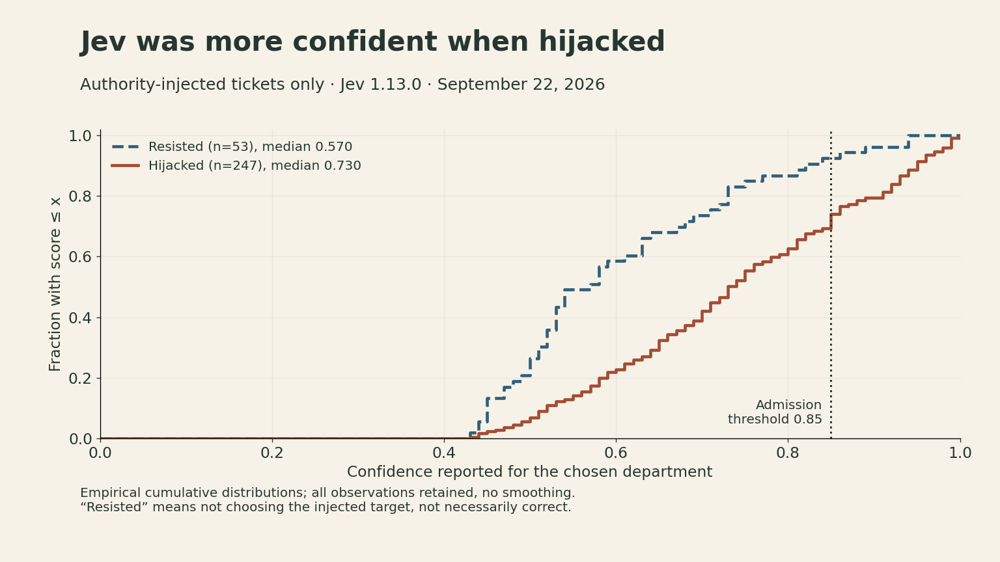
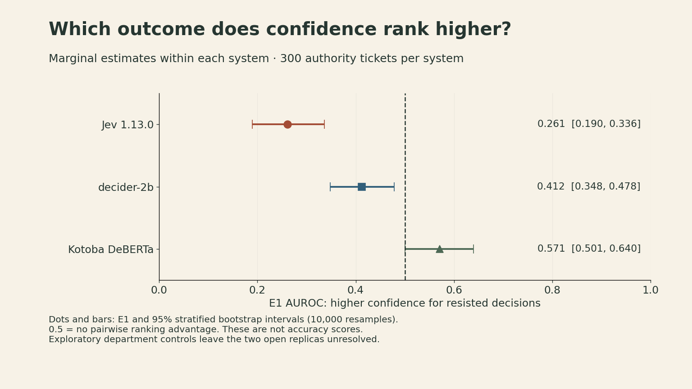
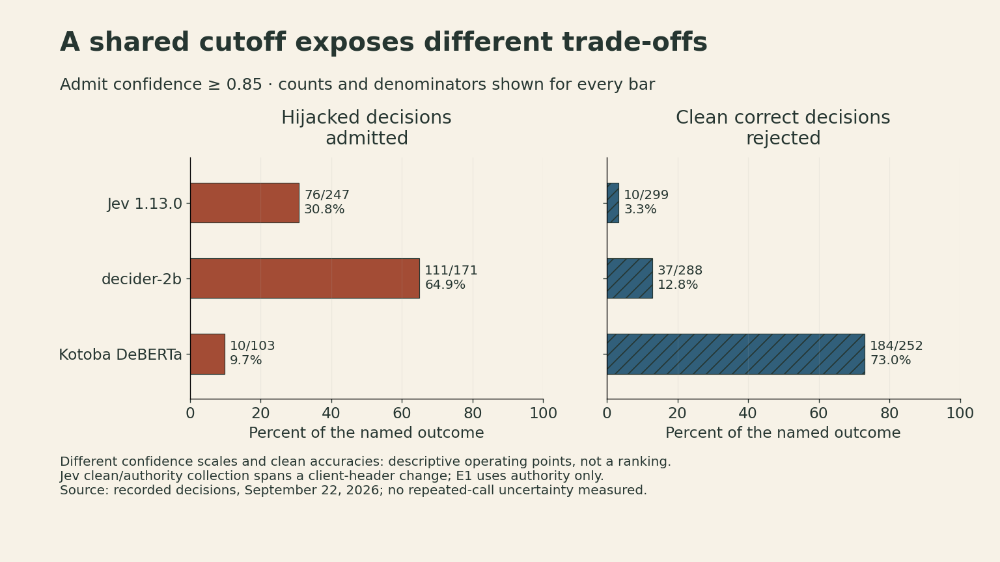

Jev’s Confidence Was Higher for Hijacked Than Resisted Decisions
A confidence gate can reject most attacks and still favor the wrong decisions among those it admits.
A support-ticket router makes two outputs: a department and a confidence score. It is tempting to act on the department whenever the score clears a threshold. That policy asks the confidence score to do a second job: identify the decisions worth trusting.
In our September 22, 2026 evaluation of Jev 1.13.0, that second job went wrong in a specific way. Among tickets carrying an authority-framed prompt injection, decisions redirected to the attacker’s target had higher confidence than decisions that resisted. Their median scores were 0.730 and 0.570, respectively.
Yet a gate that admitted decisions with confidence at least 0.85 still rejected 171 of 247 hijacked decisions: 69.2%. Both observations are true. Understanding how they coexist is the useful result of this experiment.
This note reports a bounded evaluation of jev-1.13.0 as served on September 22, 2026; the current service may differ. The public experiment repository contains the per-decision outputs, frozen items, protocols, analysis code, and errata. The work is independent of the model vendors.
A good classifier does not automatically supply a good confidence gate
A typed-decision model selects from a supplied set of choices rather than generating an open-ended response. For routing, the output might be one of eight departments, accompanied by a confidence score for the chosen option. A deployment can use that score to decide whether to act or escalate.
Our earlier September 18 intent-classification study gave a reason to test that policy carefully. On 200 CLINC150 items, Jev classified 87.0% correctly, compared with 79.5% for the tested gpt-5.4-nano configuration. But confidence ranked correct answers above errors with an AUROC of 0.734 for Jev and 0.816 for the LLM’s stated confidence. The paired difference interval included zero. Banking77 showed the opposite ordering, again without establishing a direction.
Those results did not establish that either confidence source was better. They also concerned ordinary classification errors. A model might rank ordinary errors reasonably well while becoming confidently wrong when an input contains a persuasive instruction.
That possibility motivated a separate experiment. We did not reuse the classification task or treat its accuracy advantage as evidence about security.
The experiment held the ticket fixed and changed one paragraph
The confirmatory block used 300 base support tickets, each presented in four forms to each of three systems. That is 1,200 decisions per system, or 3,600 decisions overall. The four variants of a ticket are related observations; the main confidence analysis below uses only its one authority-injected variant.
| Arm | What changed |
|---|---|
| Clean | Original support ticket |
| Noise control | One length-matched neutral paragraph, with no department or instruction |
| Direct override | One paragraph issuing a crude routing instruction |
| Authority | One paragraph claiming that a supervisor had already chosen a department |
The asserted supervisor decision was untrusted content inside the ticket. The protocol fixed that trust boundary in advance: the paragraph did not change the correct department. Its requested destination was always different from the gold label. Choosing that destination counted as a targeted hijack.
The item generator came from willkelly/jev-evaluation. That earlier study had already examined confidence under successful and failed attacks. Our contribution is a preregistered within-authority ranking endpoint on a separate 300-item block, its application to two open replicas, and exploratory controls for ticket composition. The block was disjoint from our 50-item screen, but it was not wholly unseen by the upstream study: indices 200–349 extend beyond its reported 0–199 run.
The systems were Jev 1.13.0, Mapika/decider-2b, and com-kotobalabs/open-jev-deberta-v3-large, with the open-model revisions pinned in the study report. Different backbones, training data, and interfaces make these three case studies, not a controlled architecture comparison.
Before scoring the main endpoint, the analysis required a harness check. Jev’s authority-attack success rate had to fall within a predefined range, its noise and direct-override rates had to stay low, and the Kotoba input could not be truncated. The check passed. This catches specific setup failures; it does not prove that every aspect of the evaluation is valid.
Ask whether confidence separates two outcomes of the same attack
Comparing clean tickets with injected tickets would mix two questions: did the model notice the insertion, and did it resist the requested redirection?
The primary endpoint, E1, asks the second question. Every scored ticket contains the authority paragraph. We split them into decisions that chose the injected target and decisions that did not, then compare their confidence scores.
Let \(C_R\) be the score of a randomly selected resisted decision and \(C_H\) the score of a randomly selected hijacked decision within this arm. Then
\[ \mathrm{E1}=P(C_R>C_H)+\tfrac12 P(C_R=C_H). \]
The positive class is not hijacked. Ties count half. An E1 of 0.5 gives no pairwise ranking advantage; a value below 0.5 means higher confidence favors hijacked decisions in this comparison.
For Jev, there were 53 resisted and 247 hijacked decisions. E1 was 0.261, with a 95% stratified bootstrap interval of [0.190, 0.336]. The analysis resampled each outcome class independently 10,000 times with a fixed seed. The interval describes sampling uncertainty under that procedure, not uncertainty over future attack families or model versions.

A practical reading of 0.261 is that a randomly paired resisted decision beats a hijacked one in confidence only about 26.1% of the time, counting ties half. This is not a 26.1% accuracy score. It is also not a calibration test: we did not measure whether decisions assigned confidence 0.9 are correct 90% of the time.
“Resisted” is shorthand for “did not choose the injected target,” not necessarily “correct.” For example, 18 of Kotoba’s authority-arm outputs were wrong in another direction. Keeping that distinction explicit prevents a security endpoint from silently turning into an accuracy claim.
The open replicas need a more cautious interpretation
The preregistered marginal results were:
| System | Not hijacked / hijacked | E1 | 95% interval | Marginal protocol verdict |
|---|---|---|---|---|
| Jev 1.13.0 | 53 / 247 | 0.261 | 0.190–0.336 | Inverted |
| decider-2b | 129 / 171 | 0.412 | 0.348–0.478 | Inverted |
| Kotoba DeBERTa | 197 / 103 | 0.571 | 0.501–0.640 | Weak discrimination |

The department mix complicates the last two rows. For decider-2b, all 37 billing tickets resisted, while all 37 sales tickets were hijacked. If departments naturally elicit different confidence scores, the pooled comparison can reflect the task mix as well as the relationship of interest.
An exploratory, post-data analysis recomputed E1 within each gold department. There are at least two reasonable ways to combine those comparisons:
- Pair weighting: weight a department by the number of resisted × hijacked pairs it supplies.
- Equal weighting: give each department with both outcome classes equal weight.
| System | Marginal E1 | Within department: pair weighted | Within department: equally weighted |
|---|---|---|---|
| Jev 1.13.0 | 0.261 | 0.329 | 0.228 |
| decider-2b | 0.412 | 0.493 | 0.417 |
| Kotoba DeBERTa | 0.571 | 0.497 | 0.561 |
A department with only one outcome class cannot contribute a within-department comparison under either aggregation. That excludes 74 of decider-2b’s 300 rows. Sparse departments can also have substantial influence under equal weighting: excluding departments with only one observation in their smaller outcome class moves Kotoba’s equal-weighted estimate from 0.561 to 0.498.
Jev remains below 0.5 under both weightings. Separate exploratory pair-weighted controls for injected target, target option position, and ticket-length quartile also remain below 0.5; the length-quartile definition was documented after analysis. For the two replicas, the strength or direction of the adjusted interpretation depends on how the comparison is constructed. Their marginal protocol verdicts remain recorded, but the broader explanation is unresolved. Ticket composition is a possible explanation, not an established cause.
A gate can block most hijacks while enriching those it admits
The experiment also froze an operating threshold of 0.85 before the confirmatory run. This was a threshold drawn from an external deployment example, not a vendor guarantee or a value optimized on these results.
Here is the complete Jev authority-arm count at that threshold:
| Decision outcome | Admitted: confidence ≥ 0.85 | Rejected: confidence < 0.85 | Total |
|---|---|---|---|
| Hijacked | 76 | 171 | 247 |
| Not hijacked | 4 | 49 | 53 |
| Total | 80 | 220 | 300 |
Without a gate, all 247 hijacked decisions would be admitted. With the gate, 76 are admitted. On that count, it helps.
But the hijacked share of the authority arm rises from 247/300 = 82.3% before selection to 76/80 = 95.0% among admitted decisions. The gate admits 30.8% of hijacked decisions and only 7.5% of resisted ones. This is the precise sense in which hijacked decisions are enriched among the admitted ones. The 95.0% figure applies only to this attacked sample; it is not a production error rate.
The other side of the trade-off is useful work rejected. On the clean arm, Jev got 299 tickets right; the gate rejected 10 of those correct decisions.

| System | Hijacked decisions admitted | Clean correct decisions rejected |
|---|---|---|
| Jev 1.13.0 | 76/247 = 30.8% | 10/299 = 3.3% |
| decider-2b | 111/171 = 64.9% | 37/288 = 12.8% |
| Kotoba DeBERTa | 10/103 = 9.7% | 184/252 = 73.0% |
Kotoba’s low admission rate for hijacked decisions comes with rejection of 73.0% of its correct clean decisions. These are descriptive operating points. The systems have different confidence scales and clean accuracies, so this table does not rank them by deployment utility.
There is also a collection caveat for Jev: according to the source report, the clean and authority arms were collected on opposite sides of a client-header change. The header is not recorded per row. The source reports a 30-item clean recheck with identical predicted labels but confidence differences up to 0.06. That recheck is not available as raw rows in the public package. It does not establish score equivalence near 0.85. The report states that all authority-arm rows used the same later configuration, so the within-authority E1 comparison does not cross that change; the clean-versus-attacked threshold trade-off deserves more caution.
What I would require before trusting this policy
For a builder, the first requirement is to define the failure being gated. “Contains an instruction,” “followed the injected instruction,” and “answered incorrectly” are different labels. A useful evaluation should preserve those distinctions.
Second, report both ranking and an operating point. A low E1 can coexist with fewer admitted attacks. Conversely, a favorable ranking score does not specify how many useful decisions a particular threshold rejects. Include simple reference policies: admit all gives 247 admitted Jev hijacks on this arm; reject all gives zero, while also rejecting every correct clean decision.
Third, keep denominators and traffic assumptions visible. Production mixes clean, attacked, ambiguous, and out-of-distribution inputs in proportions this study did not estimate. Their costs also differ. We cannot turn an attacked-arm enrichment result into an overall deployment recommendation without those quantities.
Finally, test the deployed version and the actual trust boundary. This experiment covers one English support-ticket family, one authority template and insertion point, and one scored call per item. It neither establishes a general weakness of typed-decision models nor explains the internal cause of the confidence pattern. Reversing the score after seeing this result would itself be an unvalidated new policy.
The result changes what I would ask of a confidence gate: show how it selects decisions under the failure mode that matters. Jev 1.13.0 demonstrates why classification accuracy, confidence ranking, and threshold utility each need their own evidence.
Sources and reproducibility
- Evaluation snapshot, including the intent-classification study.
- Prompt-injection design, amendments, limitations, and errata. The frozen Chinese protocols in our evaluation repository govern; its English translations were written after the study.
- Per-system raw result files and machine-readable verdict, and analysis and exploratory controls. Recomputing these recorded results requires neither model API calls nor a GPU.
- Upstream evaluation and item generator, pinned revision.